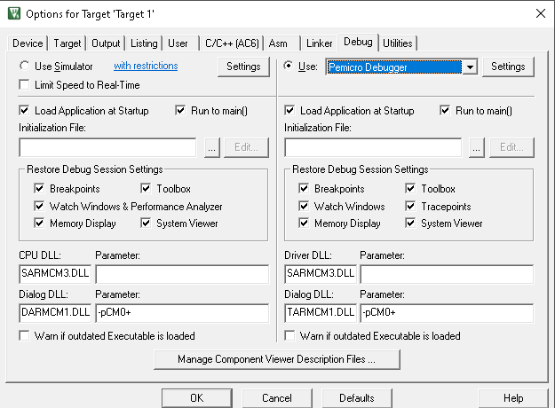

In order to use PEmicro’s Multilink or Cyclone as a debug interface, the user must make sure the TI MSPM0 target board is configured to use this option instead of the internal XDS110-ET debug probe. The procedure involves removing any jumpers from the J101 isolation block, then attaching an Arm debug probe such as PEmicro’s Multilink to the J103 header. There is also a jumper that affects power considerations. We recommend that the user carefully follow TI’s explicit instructions, which can be found in TI’s MSPM0 Launchpad User Guides in the section “Using an External Debug Probe Instead of the Onboard XDS110-ET.”
The PC connects to the Multilink or Cyclone (typically via USB cable), and then the 10-pin mini Arm header on the Multilink or Cyclone is connected to the J103 header on the TI board via a ribbon cable. A bare Multilink is shown below connected to the TI MSPM0 target board:
Fig. 1 Bare Multilink connected via ribbon cable to the J103 header on a TI MSPM0 board¶
4. Using PEmicro Tools with TI’s MSPM0 on Keil’s uVision IDE¶
The dropdown box in Options for Target -> Use allows the user to select the “Pemicro Debugger”, as seen below:

5. Using PEmicro Tools with TI’s MSPM0 on IAR’s Workbench for Arm IDE¶
Under Options for Node MSPM0x_security, in the Debugger category, the user should select “PE micro” from the Driver drop down box, as shown below: